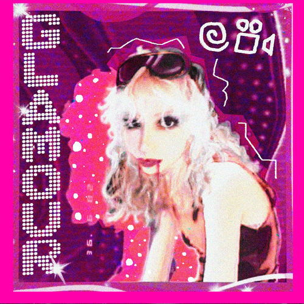

Vse Sabe quem é... LOOPCINEMA?
Poooor: Zaza =P
TUDO isso É só um Loop baby.. Pois irei trazer curiosidades e MUITAS coisas que sei sobre a Sabrina Garcia, mais conhecida como LOOOPCINEMA :3
Loopcinema ja começou sua carreira muito jovem, em 2017 com sua primeira musica no youtube chamada "Don't Stop The Party!" destinada para o jogo que ela estava reproduzindo com seus amigos. Poŕem, Sabrina havia muitos outros nomes, pelos quais que muito provavelmente VOCÊ deve ja ter visto...
Antes de qualquer coisa, ela era youtuber que gravava vídeos de minecraft, com seus 2 milhôes de inscritos no seu canal "sabfulero1". Ao mesmo tempo que ela tiha esse canal, ela também fazia outras músicas. Seu nome artístico ja foi LAVANDER, 4xSab e The Scrobbs, com cada conta, com um tipo de música.